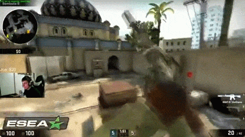

STEAM
 Steam adalah distributor permainan digital milik Valve dengan cara membeli via pembayaran daring dengan media unduhan. Dengan adanya Steam, diupayakan agar pembajakan game yang marak bisa ditekan. Cara kerjanya dengan mengunduh perangkat lunak Steam, dengan begitu dapat dicek dan langsung membeli permainan yang ada.
Steamguard adalah sistem proteksi permainan video. Di mana Steam memerlukan koneksi Internet dengan memasukkan identitas dan kata sandi steam lalu diverifikasi melalui surel elektronik agar dapat menikmati layanan khusus seperti cloud.
Steam workshop adalah layanan yang disediakan untuk menampung hasil karya dari komunitas. Karya tersebut dapat "digunakan" oleh Valve, atau hanya sekadar modifikasi tambahan yang gratis.
Dahulu, permainan video yang paling berkontribusi dalam meningkatkan popularitas Valve, Steam (toko daring Valve), dan Source (engine buatan Valve) adalah Counter Strike. Sekarang, permainan yang menjalankan tongkat estafet tersebut adalah Dota 2 dan Team Fortress 2, ditambah lagi kedua permainan tersebut gratis untuk dimainkan.
Steam adalah distributor permainan digital milik Valve dengan cara membeli via pembayaran daring dengan media unduhan. Dengan adanya Steam, diupayakan agar pembajakan game yang marak bisa ditekan. Cara kerjanya dengan mengunduh perangkat lunak Steam, dengan begitu dapat dicek dan langsung membeli permainan yang ada.
Steamguard adalah sistem proteksi permainan video. Di mana Steam memerlukan koneksi Internet dengan memasukkan identitas dan kata sandi steam lalu diverifikasi melalui surel elektronik agar dapat menikmati layanan khusus seperti cloud.
Steam workshop adalah layanan yang disediakan untuk menampung hasil karya dari komunitas. Karya tersebut dapat "digunakan" oleh Valve, atau hanya sekadar modifikasi tambahan yang gratis.
Dahulu, permainan video yang paling berkontribusi dalam meningkatkan popularitas Valve, Steam (toko daring Valve), dan Source (engine buatan Valve) adalah Counter Strike. Sekarang, permainan yang menjalankan tongkat estafet tersebut adalah Dota 2 dan Team Fortress 2, ditambah lagi kedua permainan tersebut gratis untuk dimainkan.
1. Dota 2

Dota 2 adalah sebuah permainan multiplayer online battle arena, merupakan sekuel dari Defense of the Ancients mod pada Warcraft 3 : Reign of Chaos dan Warcraft 3 : The Frozen Throne. DotA 2 dikembangkan oleh Valve Corporation, terbit juli 2013 dota 2 dapat dimainkan secara gratis pada operation system Microsoft Windows, OS X and Linux. Dota 2 dapat dimainkan secara eksklusif melalui distributor resmi valve, Steam. Dota 2 dimainkan oleh 2 team yang beranggota 5 orang pemain, setiap tim memiliki markas yang berada dipojok peta, setiap markas memiliki satu bangunan bernama "Ancient", Di mana tim harus berusaha menghancurkan "Ancient" tim lainnya agar dapat memenangkan pertandingan. Setiap pemain mengontrol satu karakter "Hero" yang berfokus pada menaikan level, mengumpulkan gold, membeli item dan melawan tim lawan untuk menang. Pengembangan Dota 2 dimulai sejak tahun 2009. Ketika pengembang mod DotA, Icefrog, dipekerjakan oleh Valve sebagai lead designer. Dota 2 dipuji oleh kritikus karena gameplay-nya, kualitas pembuatan dan kesetiaan pada gameplay pendahulu (DotA mod Warcraft 3). tetapi Dota 2 juga menuai kritik sebagai game yang susah dipelajari dan para pemain yang tidak ramah. Dota 2 menjadi game yang memiliki aktivitas pemain paling banyak di Steam, dengan pucak 800,000 pemain online bersamaan setiap hari.
Gameplay

2. Counter Strike : Global Offensive
Seperti halnya dalam versi-versi sebelumnya, Counter Strike: Global Offensive merupakan permainan dengan menggunakan sudut pandang orang pertama. Permainan ini didesain dengan menjadikan pemain sebagai penembak. Pemain dapat bergabung ke dalam kelompok Teroris ataupun Anti-Teroris di mana pemain diharuskan untuk menyelesaikan beberapa misi ataupun melenyapkan kelompok musuh. Permainan ini berlangsung dalam ronde yang pendek dan berakhir apabila pemain terkalahkan ataupun misi telah diselesaikan. Dalam kebanyakan mode permainan, seorang pemain yang kalah harus menunggu sampai ronde permainan selesai untuk dapat berpartisipasi kembali. Dalam permainan ini, pemain dapat membeli senjata dan perlengkapan lainnya pada permulaan dengan menggunakan uang yang didapat berdasarkan performa penyelesaian misi. Selain uang yang diberikan apabila pemain menyelesaikan misi atau mengalahkan musuh, terdapat juga sistem pengurangan uang apabila pemain melakukan kesalahan seperti membunuh sandera atau teman satu tim. Sebagai tambahan, setiap pemain mendapatkan hadiah uang setiap ronde yang selesai dan tim yang menang akan mendapatkan uang dengan jumlah yang lebih banyak.
Gameplay

3. Team Fortress 2
Team Fortress 2 (biasa disingkat TF2) adalah free-to-play berbasis tim first-person shooter (FPS) multiplayer video game yang dikembangkan oleh Valve Corporation. Ini adalah sekuel ke Benteng Tim mod asli berdasarkan Source Engine. Ini pertama kali dirilis sebagai bagian dari kompilasi video game Orange Box pada tanggal 10 Oktober 2007 untuk Windows dan Xbox 360. Sebuah versi PlayStation 3 kemudian diikuti pada tanggal 22 November 2007. Permainan ini kemudian dirilis sebagai paket untuk Windows pada tanggal 9 April 2008, dan untuk Mac OS X dua tahun kemudian. Team Fortress 2 adalah didistribusikan secara online melalui sistem Steam, sementara distribusi ritel ditangani oleh Electronic Arts. Pada tanggal 23 Juni 2011, permainan menjadi free-to-play , didukung oleh microtransactions untuk yang unik dalam game peralatan melalui Steam. Perkembangan Team Fortress 2 dipimpin oleh John Cook dan Robin Walker, yang awalnya dibuat modifikasi Team Fortress untuk Quake pada tahun 1996. Permainan ini diumumkan pada tahun 1998, dan pertama kali didukung oleh mesin GoldSrc Valve, tapi ini berubah karena melewati beberapa tahap desain yang berbeda. Pada tahun 1999, permainan tampak menyimpang dari pendahulunya dengan mengejar gaya yang lebih realistis dan militeristik gameplay, tetapi desain bermetamorfosis selama periode sembilan tahun perkembangan akhir. Rendisi olahraga kartun gaya visual akhir dipengaruhi oleh seni JC Leyendecker, Dean Cornwell dan Norman Rockwell dan didukung oleh mesin Source. Permainan itu sendiri berkisar sekitar dua tim, masing-masing dengan akses ke sembilan karakter yang berbeda, berjuang dalam berbagai mode permainan diatur dalam lingkungan yang berbeda atau peta, seringkali dengan tema pabrik-gudang. Kurangnya informasi atau kemajuan yang jelas selama enam tahun pembangunan awal permainan menyebabkannya diberi label sebagai vaporware, dan secara teratur tampil dalam daftar vaporware tahunan Wired News 'antara ignominies lainnya Setelah rilis., Permainan menerima kritis pengakuan dan beberapa penghargaan, dipuji untuk gaya grafis, gameplay yang seimbang, nilai komedi dan untuk penggunaan kepribadian karakter penuh dalam permainan multiplayer yang didedikasikan.
Gameplay